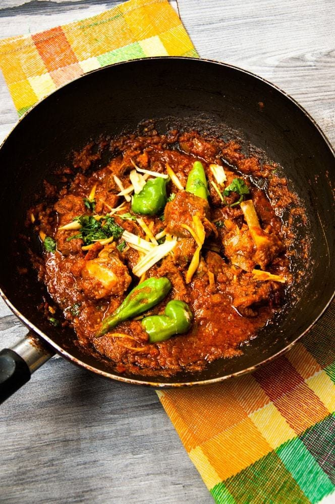
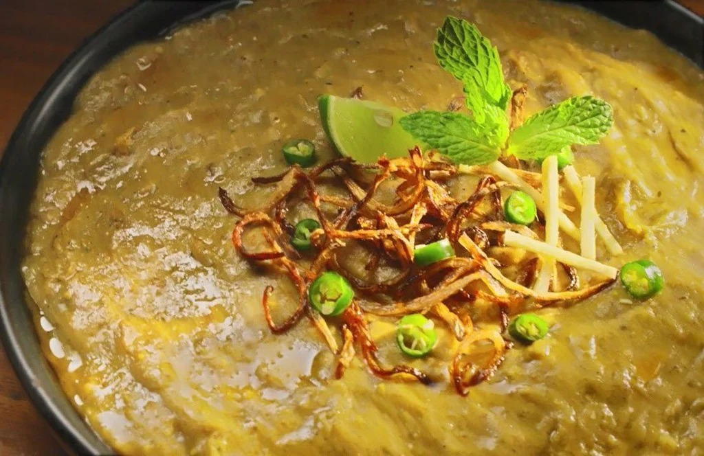
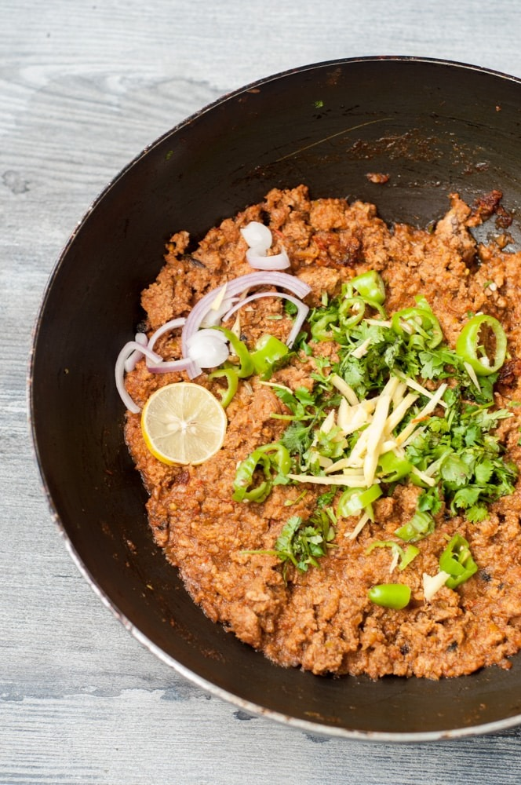
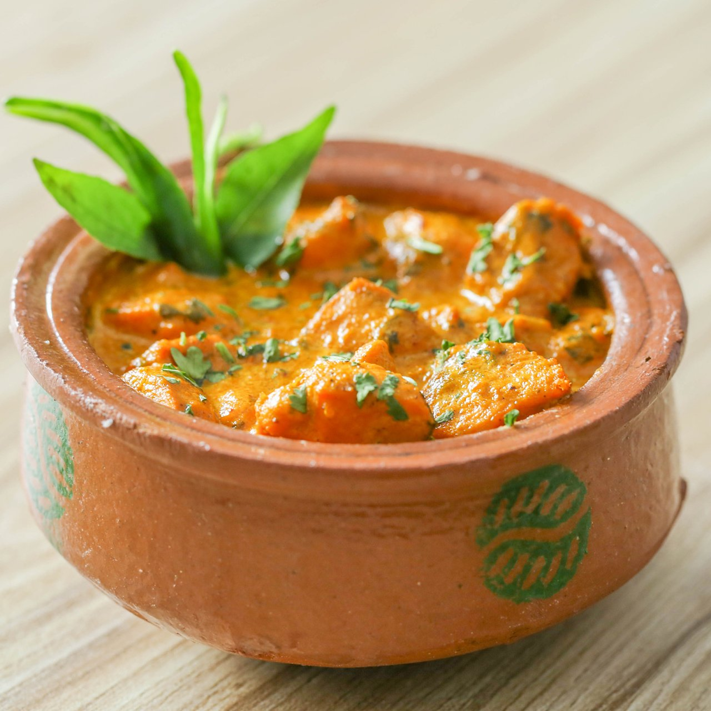

Biryani

Biryani is a mixed rice dish with its origins among the Muslims of the Indian subcontinent. It is made with Indian spices, rice, and meat, and sometimes, in addition, eggs and/or vegetables such as potatoes in certain regional varieties. Biryani is usually cooked in a pot by the dum method, in which the rice is layered with the other ingredients and then cooked over low heat, resulting in separate grains of rice that are well-cooked and do not stick together.
Chicken Karahi
Chicken Karahi is a Pakistani and Indian dish made with chicken, tomatoes, onions, ginger, garlic, and spices. It is a popular dish in Pakistan and India. It is also popular in the United Kingdom, Canada, and the United States. It is a popular dish in Pakistan and India. It is also popular in the United Kingdom, Canada, and the United States.
Haleem
Haleem is a stew made from meat, lentils, and wheat. It is a popular dish in the Indian subcontinent, the Middle East, and Central Asia. It is a popular dish in the Indian subcontinent, the Middle East, and Central Asia. It is a popular dish in the Indian subcontinent, the Middle East, and Central Asia.
Qeema
Qeema is a dish made from minced meat, usually beef, lamb, or chicken. It is a popular dish in the Indian subcontinent, the Middle East, and Central Asia. It is a popular dish in the Indian subcontinent, the Middle East, and Central Asia. It is a popular dish in the Indian subcontinent, the Middle East, and Central Asia.
Handi
Handi is a dish made from minced meat, usually beef, lamb, or chicken. It is a popular dish in the Indian subcontinent, the Middle East, and Central Asia. It is a popular dish in the Indian subcontinent, the Middle East, and Central Asia. It is a popular dish in the Indian subcontinent, the Middle East, and Central Asia.